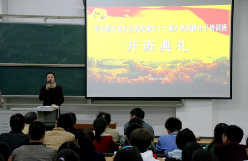

华中师范大学第52期入党积极分子培训班第九分党校开班典礼顺利举行 |
华新在线讯（通讯员 王鲁婧 王棣）11月21日晚，华中师范大学第52期入党积极分子培训班第九分党校开班典礼在9301教室举行，开班典礼由新闻传播学院党委副书记夏守信主持，新闻传播学院党委书记韩君华、信息管理学院党委书记刘宝卿、计算机学院党委书记程翔章、副书记郭庆、四个学院的带队老师叶孔森、杨先顺、梅寒及本次分党校班主任刘敏华均参加了开班典礼。开班典礼结束后，马克思主义学院余四川教授主讲了题为“社会主义核心价值观与共产党人的人生观”的第一堂课。 |
 |
典礼伊始，夏守信首先表达了对来自信息管理学院、教育信息技术学院、计算机学院以及新闻传播学院的所有参训同学的祝贺，并提出要继承并发扬华师党校优良传统的美好期望。接着，现场播放了计算机学院和信息管理学院党委书记的寄语视频，程翔章与刘宝卿书记均向参训学员提出了建议和要求，希望大家充分利用此次学习机会，“学有所思、学有所得、学有所成。” |
随后，新闻传播学院党委书记韩君华发表了动员讲话，她强调：“对于党校的学习，我们应当珍惜，不当任务当机会、不当负担当充实。而且要在学习中成就自己，在学习中追寻自己的理想信念，结业后问自己，“在党校学习的这个阶段，我到底为我自己学到了什么？有什么收获？”争取在毕业典礼上能给自己交上一份满意的答卷。最后，她给大家提出一条“慎独”的忠告，愿大家坚定信念，早日成为一名优秀的共产党员。 |
开班典礼结束后，余四川教授带来党校培训第一课“社会主义核心价值观与共产党人的人生价值观”。余教授首先从“什么是价值？”这一问题引入，并用幽默生动的形式从“价值是一个关系的范畴”“价值是一个意义的范畴”以及“价值来源于客体取决于主体”三个方面来正确的理解价值。他从“文字上的对称性”“架构上的立体性”“内容上的特要性”和“导向上的正确性”等四个特点理解社会主义核心价值观时，更是用《沁园春·霾》的调侃小诗和自己“三次胆结石发病”的经历使阐释社会主义核心价值观的深层内涵。余教授对24字社会主义核心价值观的具体内涵进行了讲解，并在个例讲解中深入浅出解释党在复兴道路上所追求的目标。 |
最后余教授谈及到共产党人应有的人生价值观，“共产党人的人生价值观为何之应有？”“共产党员人生价值关系的主体与客体各是什么？”“党的纲领和任务有何特点？”和“社会主义核心价值观与共产党员的人生价值观有什么关系？”等四个问题深入探讨了共产党人的人生价值观。他还用“安徽省教育厅女干部‘骂死保安’”的事件折射作为党员的作风必须得端正。“党课不沉闷反生动”是参训学生对余四川教授妙语连珠、总结读到、分析精辟的第一堂党课的普遍印象。 |